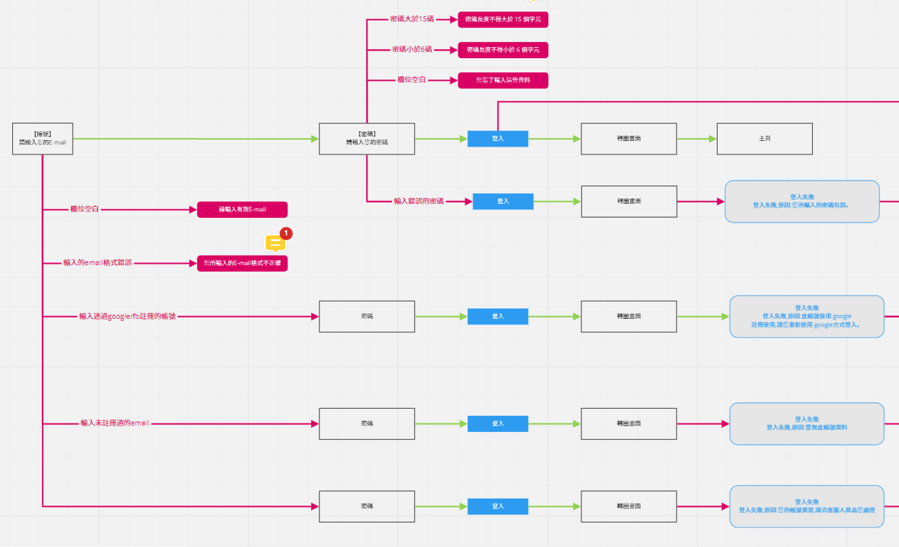
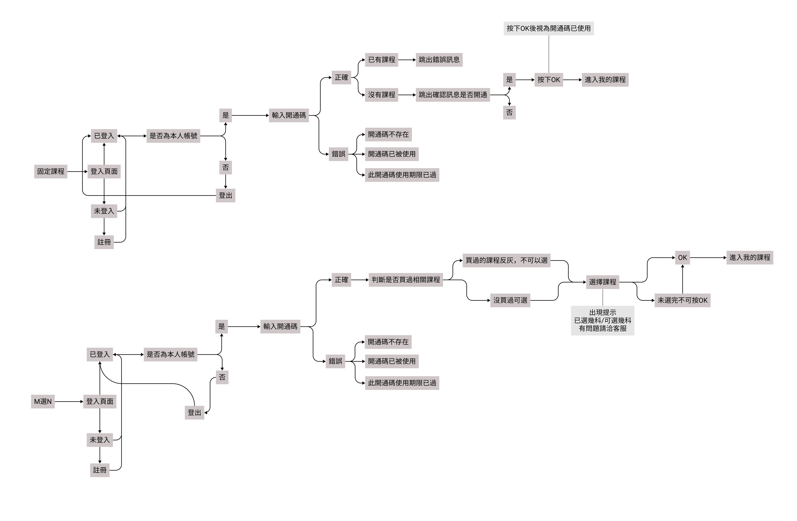
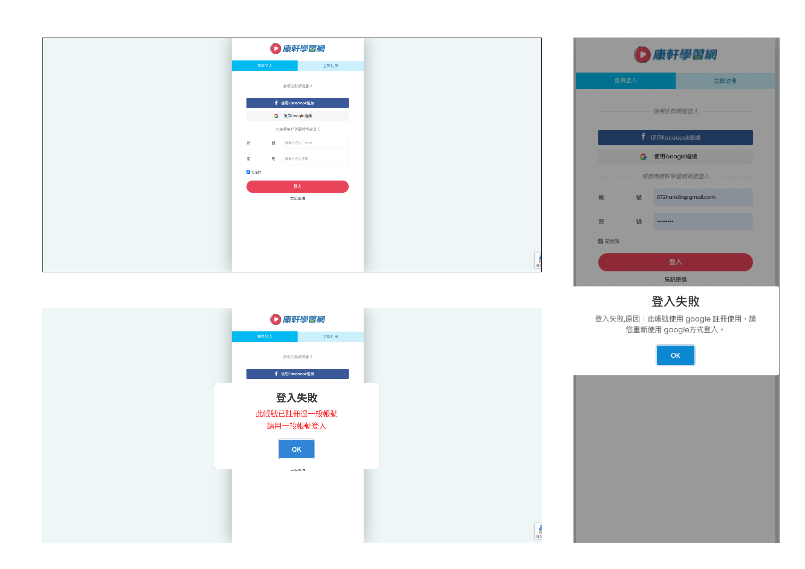

YOURCLASS
康軒學習網
Overview
簡介 : 康軒線上課程教學網頁，包括影片學習，販賣各式課程，近兩年新開的學生線上教學網。
我的工作 : UI, UX, 網頁設計切版等。重新規劃使用者流程與地圖，來提升使用者的易用性，並透過後台的數據分析，來修改UI與UX的優化，進而提升會員轉換率與會員購買率。
目標 : 優化第一版網頁，提升學生使用舒適度，並優化流程地圖等降低會員成本，提高轉換率，另與後端工程師配合熟悉作業環境，進而提供企劃與bug上的建議與可用性。
使用者調查
首先我們除了自身使用者的經驗外，也打了一百多通電訪來取得 外部的使用者經驗。 像我們身為學生時的痛點，或是站在家長角度的痛點， 都是我們優化與開發的目標。
課程設計主要是以學生能高效學習為目的，每天十分鐘，即可快速學習。在網頁的設計上，就必須提高直覺性，避免學生以及家長無法順利到達目標頁面。
我們試著使用 golden circle 等階層式的方式去尋找使用者 真正深層的需求 去設計與開發網頁，搭配後續的數據分析，發現
網站註冊頁面的 易用性 是造成會員流失的一項大問題。

並再蒐集完家長與使用者的資訊後, 理解到家長只需要簡易並能讓孩子快速看影片的方式才是他們理想的網頁，若影片題目等搭配造成使用上的困難，孩子反而會選擇放棄。至少了解在 網站上的易用性會造成使用者很大的使用意願。
同時我們也進行了競品分析，去增進我們的產品內容，同時增進我們的網頁設計等。
我們新增了學生的回饋報表，並以圓餅圖與長條圖去呈現，增加學生的達成率，還有作答的成就感，在功能面上提供錯題記錄等回饋提升學生的重複使用率，並提供不露臉的教學方式， 提升教學品質等。
Personas
同時我們也假設了使用者去檢視我們的使用者地圖，與flow等使用者經驗的回饋。

主要目標
在做完調查與後台數據分析後，透過使用者經驗分析，首要目標是提升會員註冊與購買率，所以整合了所有意見，並重新規劃了flow去檢視邏輯等問題，釐 清目前網頁所缺乏需要增進易用性的地方，包括登入頁面的流程flow的設計，與優惠開通碼等規劃。同時也與行銷配合增加所需要的分析節點，來達到 後續所需要的數據與使用者遊覽地圖分析等。
登入頁面
購買優惠頁面
Wireframes & Prototype設計討論
在設計上，除了flow在初步優化規劃流程外，之後也提供了wireframe等圖確認網頁規劃與設計來達成組內的溝通協調。
並使用Figma做了prototype，去測試整個流程的順暢進行，與決定設計方向，並統一了彈跳視窗等設計系統。同時也導入了figma使用方法與相關使用者經驗的知識，來增加 企劃們的工作效率與功能提升的判斷性。(圖為部分頁面)

UI/Mock up
下圖為部分原版與優化的比較，包括網頁設計的優化與RWD等等。
在UI部分，根據我們的調查在原本全端工程師的設計中，因為登入頁面的易用性等導致了30%左右的使用者取消註冊，並由我這邊重新再做設計提高註冊轉換率。 圖中的專案為登入與註冊頁面的重新設計，課程販賣等卡片頁面，因為目標客群為年紀較大的客群關係，在網頁排版上不做過多的特效與修飾，主要以資訊傳達 為主。
而在註冊等流程，則是花了較大的功夫去做設計，來提升註冊率。首先把註冊與登入按鈕明顯的區分，並使用紅色(視覺上能有更多的點擊意願)增加使用者的點擊率， 並在手機版本上的按鈕都在約50px以上，符合人類手指尺寸。同時在註冊與登入頁面中，我把 icon 作為輸入帳號的提示，並把文字放進輸入格內，提升所有頁面的簡潔性。 使用者大多為有點年紀為孩子註冊的家長，所以我同時也提升了按鈕的明顯性，與提升錯誤回饋的引導。
部分修改前
部分修改後
總結&成果
實際上在產品與網頁的優化，除了在UI上下足了工夫來提升使用者的購買率與協調性外，在UX的分析與設計上來提高使用者的易用性， 同時透過與行銷的配合，在網頁切板時探討了更多流程相關的邏輯與分析，讓行銷更加容易的去設置像是UTM節點等等的數據分析， 並同時在切版上提供了SEO優化等，來提升行銷的操作與曝光度。 並在完成優化之後，順利的提升了會員轉換率，並以實際業績來說從半年前的不到100萬的業績，提升為半年超過100萬的業績。

©2022 ZIHYANG LIN